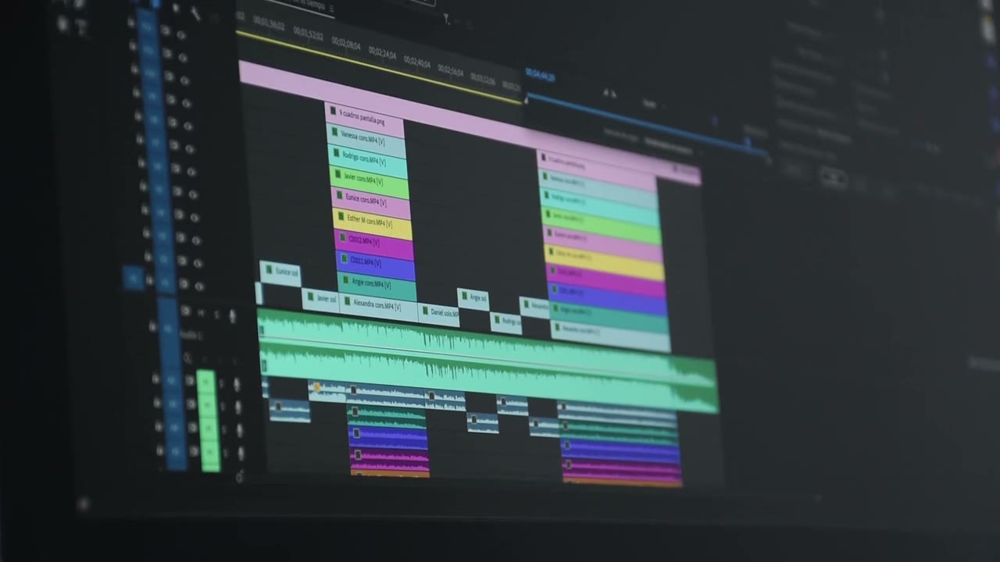
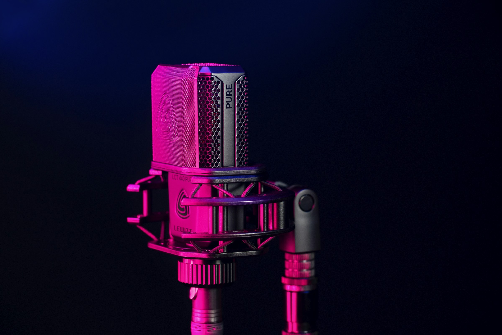
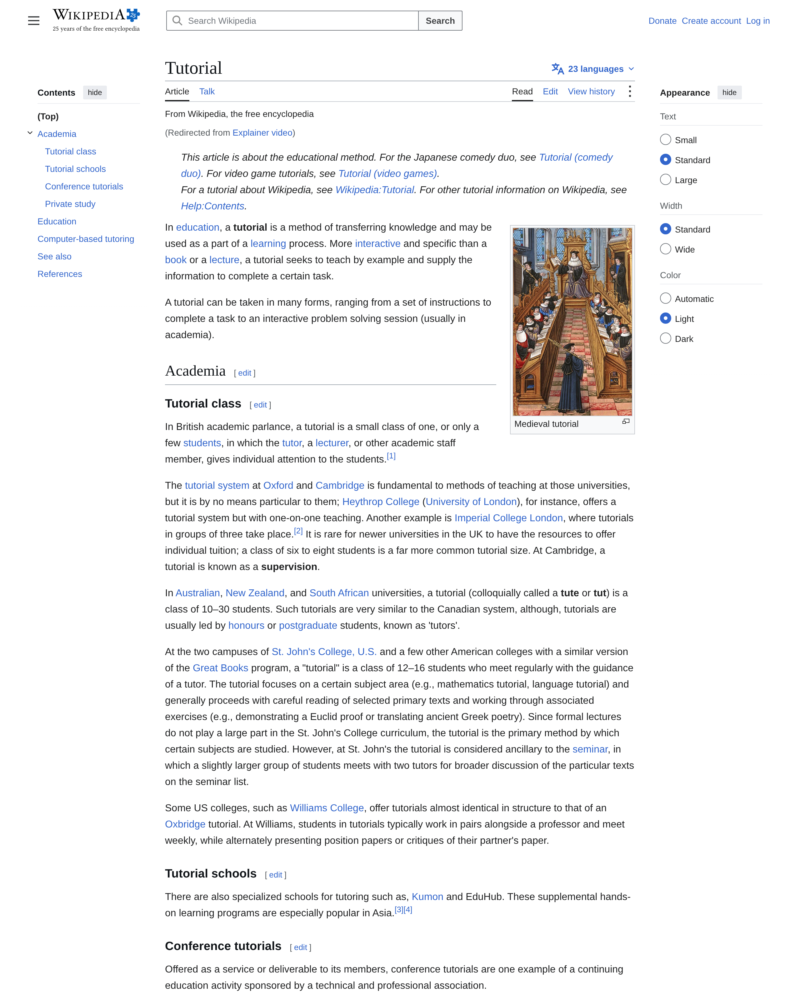
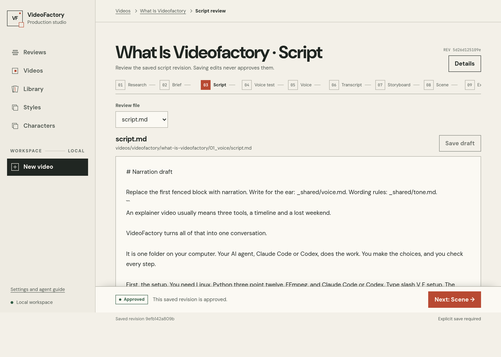
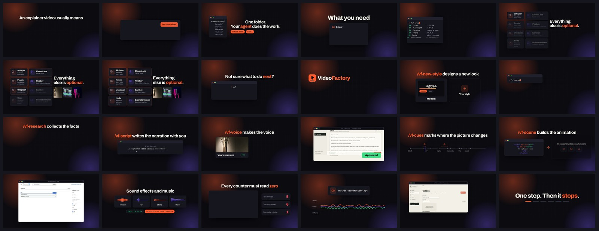
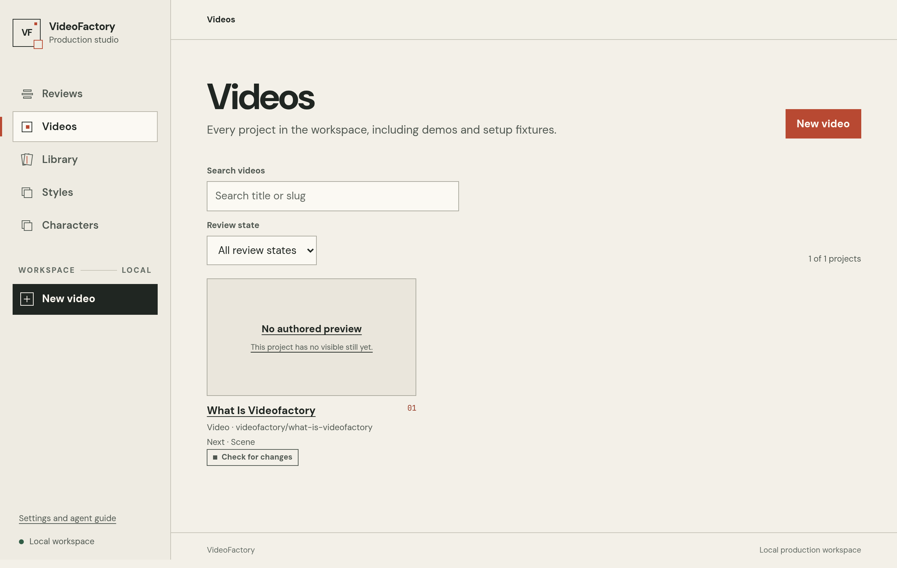

An explainer video usually means
Editor
Timeline
Audio
a lost weekend
Three tools. A lost weekend.
Chat with your agent
/vf-new-video
Which brand? Wide or tall?
House brand. Wide.
One folder. Your agent does the work.
videofactory/ brands/ videos/ anim.py
Claude CodeCodex
You chooseYou check
Research
Voice
Words
Cues
Scene
Render
What you need
- Linux
- Python 3.12
- FFmpeg
- Claude Code or Codex
Test video
All required parts are OK.
Whisper
ElevenLabs
Pexels
Pixabay
Unsplash
Earshot
Node
Brainstormform
Everything else is optional.
A time for every word
A paid AI voice
Free keys for stock video and photos


The agent listens to the sound
An advanced animation engine
Questions as a form in your browser
github.com/
dutchbase/brainstormform
Not sure what to do next?
/vf-help lists every command
/vf /vf-help /vf-setup /vf-new-brand /vf-new-style /vf-new-character /vf-new-video /vf-research /vf-script /vf-voice /vf-transcript /vf-cues /vf-scene /vf-render /vf-status
your colours, your look
Archivoheadings
Interbody
JetBrains Monolabels
George
ElevenLabs voice
/vf-new-style designs a new look
Big type.
ModernDark
Modern
Your style
/vf-new-character makes a mascot
BriefWho it isApproved
ConceptsAI imagesApproved
IdentityOne locked lookApproved
VariantsPoses and facesApproved
> /vf-new-video
wide 16:9
tall
videofactoryyour brand
Need facts?
en.wikipedia.org/wiki/Tutorial

/vf-research
/vf-script writes the narration with you
# script.md An explainer video usually means three tools, a timeline and a lost weekend.
A tone check removes the hype
Unlock your productivity
/vf-voice makes the voice
127.0.0.1:8765 / review / script

> /vf-transcript
/vf-cues marks where the picture changes
/vf-scene builds the animation
An explainer video usually means
Icons, graphics and Lottie from the library
Animated icons
Colour graphics
Lottie
en.wikipedia.org
Agent flow
Card stack
Ticker
Sound effects and music
Free CC0 filesGenerated here
Every counter must read zero

what-is-videofactory.mp4
An explainer video usually means
Phone copy
Thumbnail
Earshot listens to the render
python anim.py listen
127.0.0.1:8765 / videos
127.0.0.1:8765 / review / script
One step. Then it stops.
scriptvoicewordscuesscenerender
A clear yes from you
This video was made with
those same commands.
/vf-new-video/vf-script/vf-voice/vf-transcript/vf-cues/vf-scene/vf-render
FreeOpen sourceMIT
$ git clone https://github.com/dutchbase/videofactory> /vf-setup
github.com/dutchbase/videofactory